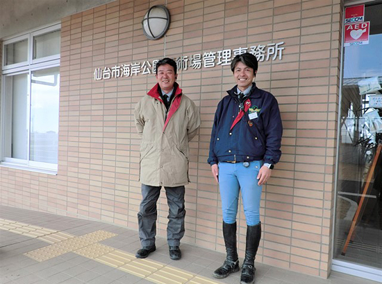

被災地のいま 宮城県・福島県の現状
「被災地のいま」 ～宮城県仙台市～
第80回 2020年4月5日 ――地域とスポーツ――
復興した馬術場からいつかオリンピック選手を
宮城県仙台市／海岸公園馬術場
仙台市は、津波の被害を受けて人が住めなくなった東部沿岸地域の一部を、スポーツやレクリエーションのできる「海岸公園」として再整備しました。
海岸公園馬術場（以下馬術場）はその一角に位置し、馬とのふれあいや乗馬の機会を市民に提供しています。
馬術場は2001年のみやぎ国体の際、競技会場として新設された場所で、乗馬ファンに長く親しまれてきました。しかし2011年3月11日の震災でその歩みは一旦途切れました。馬術場は津波の直撃を受け、55頭いた馬のうち19頭が犠牲になりました。
所長の木幡良彦さんは、水の引いた13日から他のスタッフとともに馬の捜索にあたりました。「キャンディという馬だけは津波の翌日、施設から少し離れた仙台東部道路で見つけ保護しました。36頭を救出しましたが大ケガをしている馬が多く、他の場所に移して治療しました」。
海岸公園の整備が進み、馬術場が元の場所で営業再開を果たしたのはそれから7年4ヶ月後の2018年7月のことです。オープニングイベントではオリンピック2大会出場の経験を持つ木幡さんが演技を披露した他、津波から生還したキャンディ号のひき馬体験が行なわれました。
中口和哉さん（営業部）は「馬術場が再開することで再び地域が盛り上がってくれたらいいなと思いながらオープンの準備を進めました」と振り返ります。再開の日は「沿岸部が懐かしくて」という元住民や「馬がどうなったか気になっていた」という人も訪れ、馬術場のスタッフを喜ばせました。
馬術場では乗馬はもちろん、馬のエサやりやひき馬など様々な体験ができます。なかには「ただ見ているだけでもいい」と無心に馬を眺めている人もいるそうです。
「復興が進む沿岸部の風景に心が追い付かないという人も多いでしょう。馬とのふれあいで少しでも前向きな気持ちになっていただければと思っています」（中口さん）。
現在は、馬の生態学習や隣接する冒険広場との連携によるサイクリングロードひき馬体験など子どもたち向けの取り組みも積極的に行なっています。
復興のシンボルともなっている海岸公園に人が集い、馬術場からまた乗馬のオリンピック選手が出る…。そんな夢を語り合いながら木幡さんも中口さんも乗馬の楽しさを広く市民に伝えようと頑張っています。
◎海岸公園馬術場（指定管理者・乗馬クラブクレイン） https://www.kaigankoen-bajyutsu.jp/

▲木幡良彦さん（左）と中口和哉さん。「ここは公園なので気軽に立ち寄っていただける。エサをやったり、ひき馬をしたり、より乗馬が身近に感じられる施設にしたいです」。
▲クリーム色のたてがみを持つキャンディ（16歳・メス）はひき馬体験の人気者。津波で生き残った36頭のうちの1頭です。
2019年3月21日、みやぎ生協はコープふくしま・福島県南生協と組織合同しました。このコーナーのタイトルも「被災地のいま みやぎ生協・コープふくしまから宮城・福島のいまをお伝えします」に変え、福島県の現状についてもお伝えしていきます。
前の記事
第79回「被災地のいま ～宮城県仙台市～」（2020年3月5日）